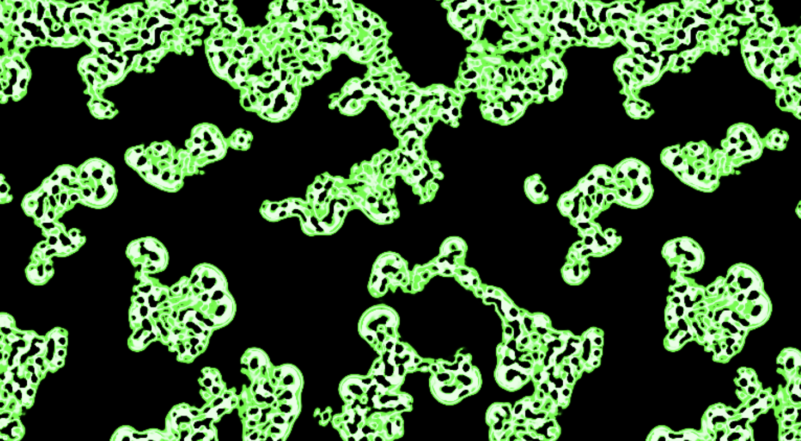
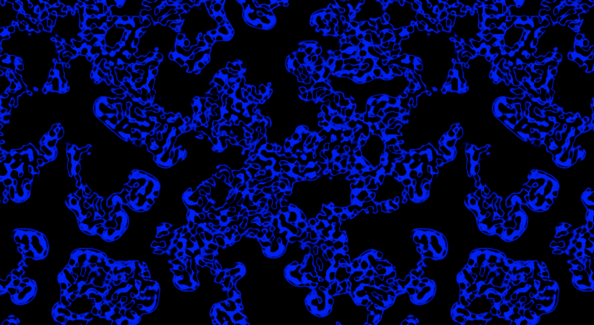
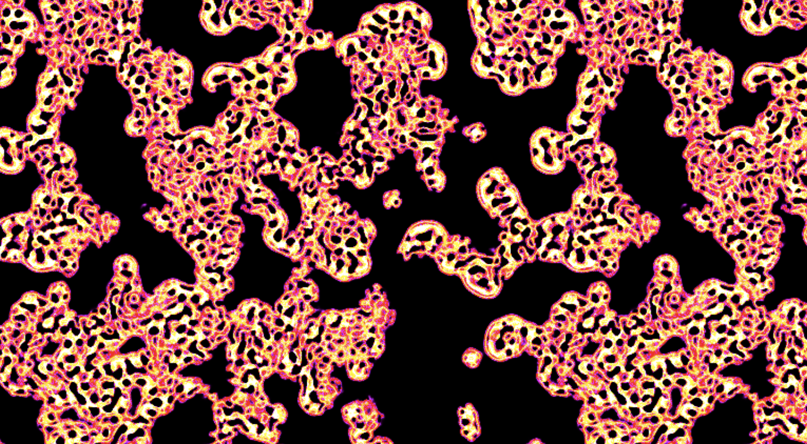

For this assignment, I decided to add control features to and optimize one of my previous assignments. I used the Smooth Life simulation and connected it to a MIDI controller. In my original Smooth Life assignment, I mentioned that if I had more time, I would have included color controls in the simulation. So, I thought it would be cool to link MIDI keys to different color values.
(C Key):
So, the C key input is the default. Whenever the simulation is in a different state, you can use the key to get back to the default state. With different keys, I tested color patterns with trigonometric time functions and octave data.
(E Key):
(F Key):
(B Key):
The octave data (from 1 to 7) can also be passed as a uniform to register changes for the same letter but different octaves like D2 and D3.
(Difference between D3 and D5): Here, you can see the difference between same color but different octaves. On 5th octave, the outline is way thicker and the background color converges to the blue outline color of the cell clusters. On 3rd octave, the outline gets only slightly thicker over time.
The feedback I got was mainly positive. A couple people asked about the 3:1 ratio and approximation process of Smooth Life. I also tested out 1/3 radius values instead of 3/9 (discussed in Assignment 4) and it was unstable. The variety of color options was apparently appealing. I tested multiple color values and patterns to get a good contrast and a few people acknowledged that. Upon suggestion, a further improvement to the simulation could be abstracting the ALPHA or birth, death ranges of cells to control those and modifying the speed of the simulation.